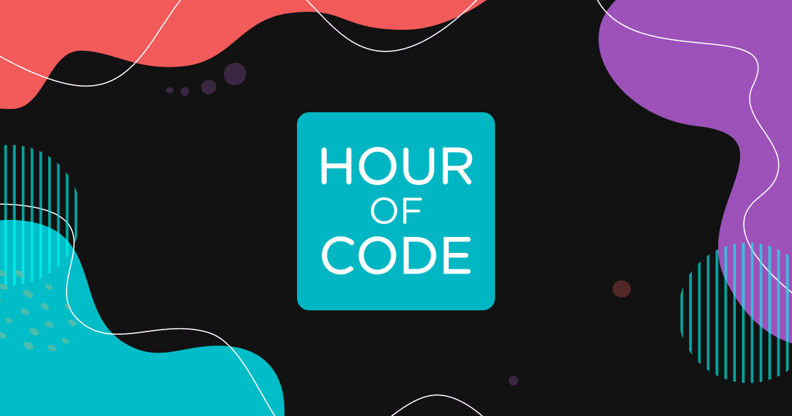

Hour of Code

To begin with, within the hour of Code that was conducted at school (173№ numbered school), several vital things were observed and considered. But prior to that, it is explicit the preparations and measurements thoroughly done and conducted before attending this school and making an hour of code there. First of all, the preparations, in terms of the way of presentation, process of taking photos, videos as well as testing the tasks that students were required to accomplish, were done. Secondly, our team arrived to school where the main work took place, which is the presentation of who we are(as an clarification the presentation regarding ADA university was presented), why we came here and what are we willing to do. Furthermore, the key target of the entire project was fulfilled, the goal to explain the coding in simple terms through presenting it as a simple algorithm which is supposed to be created and then written properly in some specific programming language which has its own sets of the way how the code is supposed to be written – syntax. In addition, students were provided with 20 tasks to complete which most of them have done without any significant challenge. At the same time, the participants themselves claimed the tasks to be as not something explicitly unique for them, since they used to have similar courses before, however they claimed the task ask more logical and appropriate for them starting from that point as they didn’t know the meaning and aim of accomplishing these tasks before which they did just for “full mark”, however after this practice they realized the entire meaning of these tasks and very satisfied with the quality of these particular tasks and the whole project, which were supposed to aid students to practice algorithmics that are the basics of coding and programming as the concept, respectively. Throughout the process of students doing the tasks from the code.org and practicing the algorithmics there were no significant challenges in terms of realization and accomplishment of the tasks. To specify, most students have started to do tasks and have completed the first ones without any single hesitation, except a single case when a group of students needed certain clarification. The total number of tasks was about 20, students have fulfilled 18 of them without any problems, meanwhile last two tasks were supposed to be done with limited amount of blocks that can be utilized in the program, hence on this occasion our help was required, therefore we demonstrated and thoroughly explained the alternative way of fulfilling the task which involved including one for cycle in the other one which helped to use less blocks in order to complete the challenge, as an addition we have also informed students that identical things are done in coding as well where we are supposed to write maximally proper and simple code by keeping it simple and not making it too complex in terms of structure and size. As it was previously said, prior to coming to school we met a couple of times and discussed the way how each of us is going to participate, who is going to illustrate the section regarding the presentation of who we are, where are we studying and why are we here, who is going to take photos and videos, and who is going to define the coding and algorithmics. After decently preparing from this perspective, we came to school a bit earlier the arranged class in order to make sure everything is well prepared for the lesson, however unfortunately it turned out that there was no projector in the informatics room and half of the computers were not working, hence we had immediately proposed alternative, take a couple of notebooks from the informatics classroom and move them to the typical classroom where the lesson was eventually arranged, here we have optimized all laptops and downloaded the presentation from each computer so that students would see the content of our project from their screens, hence we have successfully managed to solve the instant problem that occurred. Meanwhile, the only problem left was the behavior of a couple of students who were energetic and active enough and were constantly disrupting the lesson, even though our lesson was disrupted for a couple of times, we managed to take the situation under control, with the great help of supervisors which were invited to observe the lesson as well as to control the students in case of emergence of such issues. In addition, it is also explicitly important to mention the contribution of the administration of the 173rd numbered school as well as the decent work that was done by several teachers. The administration itself has allowed to conduct the project without any single hesitation and need for “signing special paper” which was requested by many schools but not this one. Secondly, the special thank should definitely be given to a couple of teachers from this school who helped to organize the class, find the proper classroom, gather all the students and maintain the decent atmosphere in the classroom during the lesson. To give a better illustration in this perspective, as it was mentioned, sometimes the class was disrupted by a couple of students but with the crucial help of several teachers and our ambition to continue the lesson no matter what we managed to avoid any kinds of disruptions and interference into our work Overall,the event itself was successfully done, the intact material was properly illustrated for students of 7th grade which they have utterly understood and managed to complete the tasks given to them which demonstrate the effectiveness of learning through interactive game session, correspondingly